Megyei forduló — 6. osztály (25 feladat)
Peti az EKEELCMSLKCES betűsorban minden második betűt összeolvasott. Melyik szót kapta?
Pityu reggel 7 óra előtt 15 perccel ébredt. Ezután 10 perc lustálkodás és még fél óra készülődése után elindult az iskolába. Mennyi volt ekkor a pontos idő?
A válaszokban felsorolt öt törtszám közül négy egyenlő egymással. Melyik törtszám nem egyenlő a többi törtszámmal?
Öt kisliba libasorban úszik a tóban (lásd ábra). Egyszer gondol egyet Uszi, lebukik a víz alá, és a sor végére úszik. Majd Bukó is lebukik a víz alá, és a sor végére úszik. Hányadik a libasorban ezután Totyi?
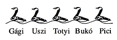
Az ábrán látható alakzat négy egyforma négyzetből áll. Karcsi két ilyen alakzatot kivágott papírból, és egymás mellé rakta azokat. Melyiket nem kaphatta?
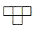
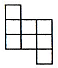
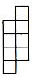
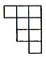
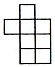
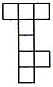
Hány különböző betűsort olvashatunk ki az ábrából, ha a bal felső négyzetben lévő H betűtől indulunk, a jobb alsó négyzetben lévő A betűhöz érkezünk, és a kiolvasás során egy alkalommal lépünk lefelé, minden más esetben jobbra lépünk egyet?
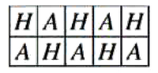
Juditnak öt olyan könyve van, amelynek a címében szerepel egy szám (lásd ábra). Ha a címekben szereplő öt számot összeadjuk, akkor azt a számot kapjuk eredményül, amely szerepel Zsófi könyvének a címében. Mi Zsófi könyvének a címe?
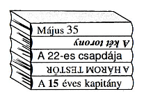
Egy szám ellentettje 2020-szal nagyobb a számnál. Melyik ez a szám?
Péter egy kör alakú asztalnál ül. Ha a bal keze felé haladva számlálja meg asztaltársait, akkor öten ülnek rajta kívül az asztalnál, ha a jobb keze felé haladva számlálja meg őket, arra is öten ülnek. Hányan ülnek összesen az asztalnál?
Hány állítás igaz? • Van legkisebb természetes szám. • Minden természetes számnak osztója az 1. • Minden természetes számnak legalább két pozitív osztója van. • Minden természetes számnak többszöröse a 0.
Ádám leírta a 9-nek az 50-nél nagyobb kétjegyű többszöröseit, Luca pedig azokat a 100-nál kisebb természetes számokat írta fel, amelyek oszthatóak 5-tel. Melyik számot írták le mindketten?
Gondoltam egy természetes számra, melynek a 2020-szorosa 2021-gyel nagyobb, mint a 2019-szerese. Melyik számra gondoltam?
Adott a síkon négy különböző egyenes: a, b, c és d. Hány metszéspontjuk van összesen, ha az a egyenes párhuzamos a b egyenessel, a c egyenes párhuzamos a d egyenessel és a b egyenes merőleges a c egyenesre?
Az ábrán két számot megcserélünk úgy, hogy minden sorban és minden oszlopban ugyanannyi legyen a számok összege. A két szám közül az egyik a 9. Melyik a másik szám?
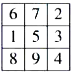
A MÉZESKALÁCSORSZÁG betűkártyákból az ötödikes Júlia kirakott négy szót úgy, hogy a négy szóhoz minden kártyát felhasznált, és ezt a négy szót leírta egy lapra. Húga, a harmadikos Anna ugyanerre a lapra leírt egy szót, így a lapon most már öt szó van (lásd ábra). Melyik szót írta Anna a lapra?
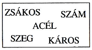
A XXXII. Nyári Olimpiai Játékokat 2020-ban Tokióban bonyolítják le. Ebben az évben a Mategye Alapítvány a XXXI. Zrínyi Ilona Matematikaversenyt rendezi meg. A nyári olimpiai játékok négyévente, a Zrínyi Ilona Matematikaverseny évente kerül megrendezésre. Hányadik Zrínyi Ilona Matematikaversenyt bonyolították le a XXVII. Nyári Olimpiai Játékok rendezésének évében?
Az ábrán látható 3x3-as négyzetrács 9 fehér négyzete közül szürkére színezünk néhányat úgy, hogy a színezés után mind a 9 négyzetnek legyen olyan szomszédos négyzete, amely szürke. Hány négyzetet színezünk szürkére, ha azok száma a lehető legkevesebb? (Két négyzet szomszédos, ha van közös oldaluk.)
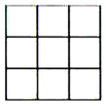
Az ábrán látható összeadásban az azonos betűk azonos, a különböző betűk nem biztos, hogy különböző számjegyeket jelölnek, és az összeg négyjegyű szám. Mennyi a K+E+C+S+K+E összeg lehetséges legnagyobb értéke?
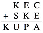
Hány olyan háromjegyű páratlan természetes szám van, amelyben a számjegyek összege páratlan?
Az 1425; 4308; 7958 és 9016 számok mindegyikére igaz, hogy mind a három másik számmal egy azonos számjegye van. Mennyi a számjegyek összege abban a számban, amelyiket az előző négy számhoz hozzávéve mind az öt számra teljesül, hogy mind a négy másik számmal egy azonos számjegye van?
Egy matematikaverseny döntőjébe tíz versenyző jutott, egy lány és kilenc fiú. Mindegyik feladatra hét versenyző adott helyes megoldást. A fiúk mindegyike 4-4 feladatot oldott meg. Hány feladatot oldott meg a lány?
Hány különböző útvonal vezet az ábra A pontjából a B pontjába, ha egy útvonal a vonalakon lefelé, felfelé, jobbra vagy jobbra felfelé haladhat, és az ábra bármely szakaszán legfeljebb egyszer haladhat végig? (Két útvonal különböző, ha van olyan szakasz, amelyen az egyik áthalad, a másik nem.)
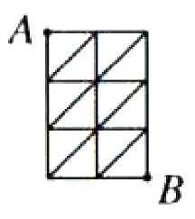
Egy tömör fakockát az egyik lapjával párhuzamos síkokkal feldaraboltunk úgy, hogy a keletkezett testek felszíneinek összege a kocka felszínének háromszorosa volt. Hány síkkal vágtuk szét a fakockát?
Bea csokrokat készít. Mindegyik csokor háromféle virágot tartalmaz. A csokrokhoz 20 szegfűt, 20 gerberát, 25 rózsát és 40 tulipánt használhat fel. Hány csokrot készít el Bea, ha azok száma a lehető legtöbb?
A feloldóminta érintőképernyők biztonsági kódjaként használatos. A feloldóminta az érintőképernyőn látható 9 pontból néhányat összekötő, egymáshoz csatlakozó szakaszokból álló vonal, amelyben számít az összekötés sorrendje. A feloldóminta vonala a megadott 9 pont mindegyikén csak egyszer haladhat át. Hány olyan feloldóminta állítható be, amelyik az ábra A pontjából indul, a B pontjában végződik, és közben a többi 7 pont közül kettőn halad át? (A 9 pont egy négyzetrács rácspontjai.)
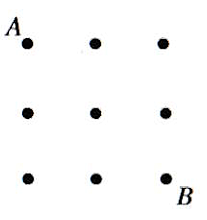